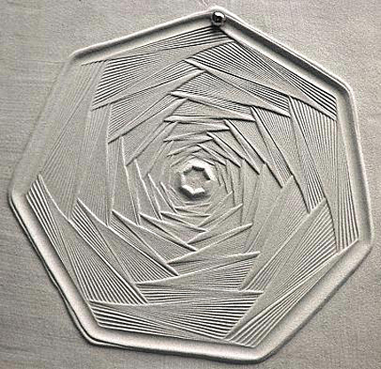
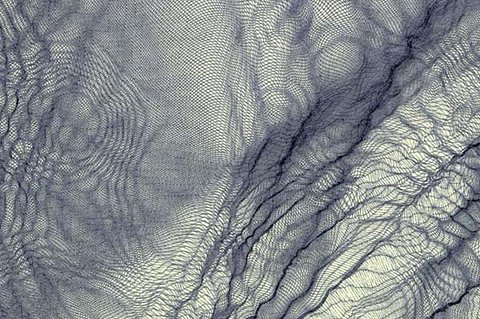

Jean-Pierre Hébert
Jean-Pierre Hébert
Jean-Pierre Hébert uses many materials for his works. One of the more impressive feats is his dedication to doing artwork by hand. Hébert very rarely uses a printer and is an impressive craftsman which is shown by his hand done works. He puts his works on film, paper, wood, linoleum, glass, metal, air, water, and sand. Hébert draws anything from small to large, basic to high tech, and even cartoons. The drawings come from code which shows up on a computer and is then translated into lines, shapes, and many other designs. Some examples of his work both computerized and done by hand are:
Some examples of his work both computerized and done by hand are...
Sand Art
Water Based

Computer Coded

Jean-Pierre Hébert uses these tools:
silverpoint on prepared paper
graphite lead on paper
pen & ink on paper
brush & ink on paper (calligraphy!)
acrylics on canvas
etched plates (to produce hand pulled prints off the press)
sand traces (digital zen gardens)
reliefs on wood
paper embossings
plasma torch cuts on steel, etc…